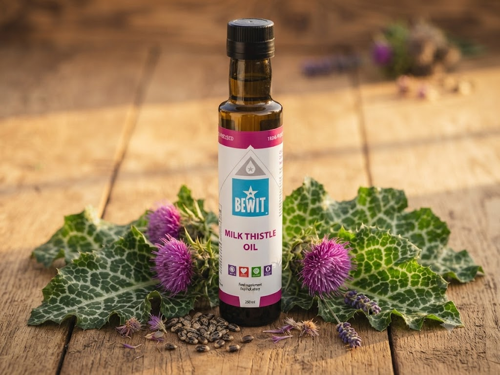

🌿 Nosný olej
lidově „Kristova koruna"
Tradičně používaný pro podporu jater a trávicí soustavy — s oříškovou, lehce nahořklou chutí.

Ostropestřec mariánský, lidově nazývaný také „Kristova koruna", se odpradávna používá zejména pro svou schopnost podporovat játra a trávicí soustavu.
Podporu jater, trávení a celkovou detoxikaci organismu.
Ostropestřec mariánský dostal přezdívku „Kristova koruna" podle bílých žilek na listech — podle legendy vznikly z kapek Panny Marie.
Jako registrovaný zákazník získáte slevu až 50 % na vybrané produkty.
Informace na tomto webu mají výlučně informační charakter a nejsou náhradou odborné lékařské péče. · Odkazy vedou na partnerský e-shop Bewit.